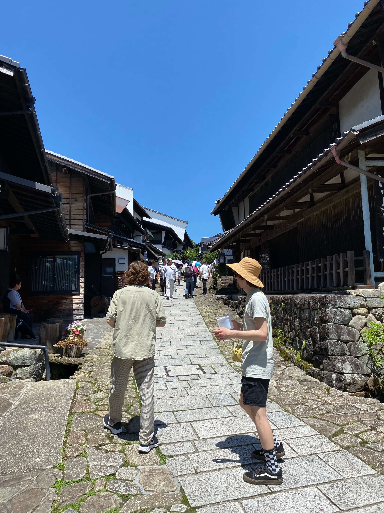
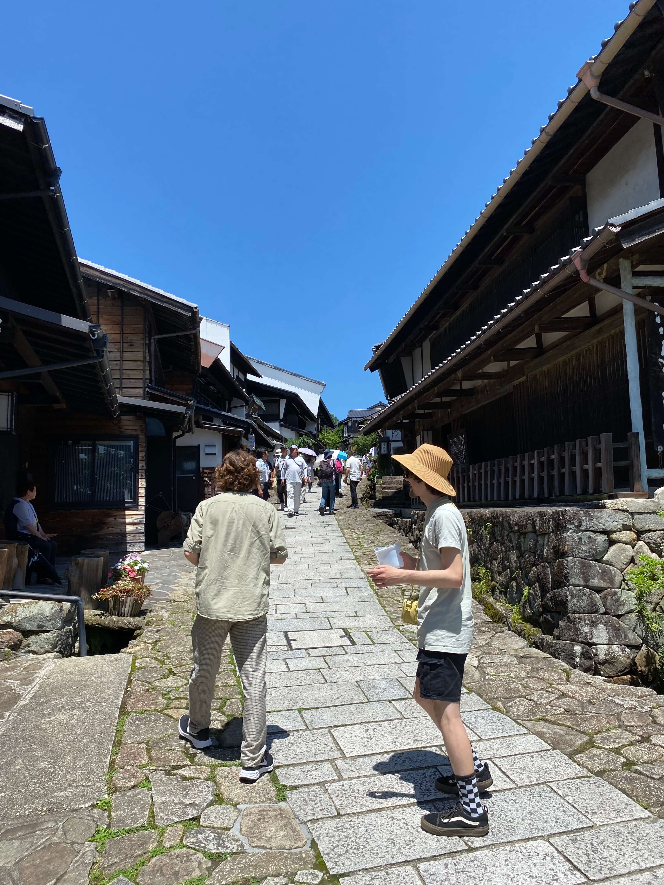

Nakatsugawa was onze eerste verblijfsplaats buiten de grote steden. Hier kregen we echt een beeld van het Japanse platte land (in de bergen dan). Hier hebben wij een paar nachtjes uitgerust in een luux hotel met Onsen. Een onsen is een heel warm bad waar je na een lange dag lekker in kan weken.
Na een nachtje in het fancy hotel zijn we naar een ryokan gegaan iets verder buiten het dorp. Dit is een traditioneel japans huis waar vroeger samurai in hebben gewoond. Wij zijn hier met onze tassen heengelopen en na het droppen van onze spullen zijn we met een bus naar Magamo gereisd om hier de Nakasendo trail te bewandelen. Deze wandeltocht was van oudsher een van de vijf wandelroutes om van noord naar zuid Japan te kunnen. Hier zijn prachtige traditionele dorpen uit ontstaan en de route zelf was fantastisch. Na de wandeltocht hebben we alle bijzonderheden van de ryokan mogen ervaren.
 
